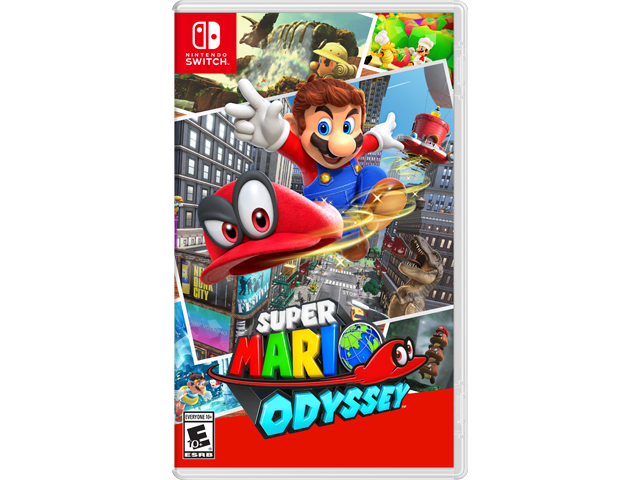
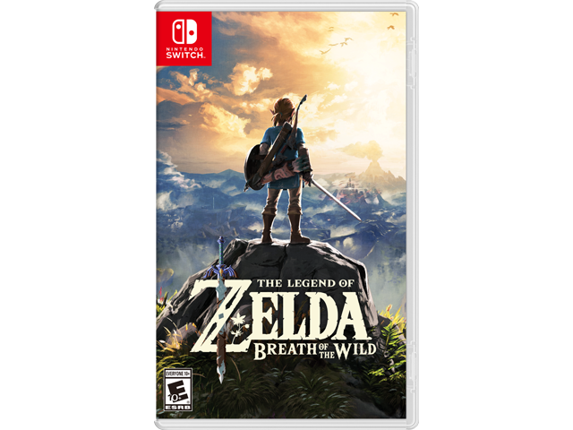
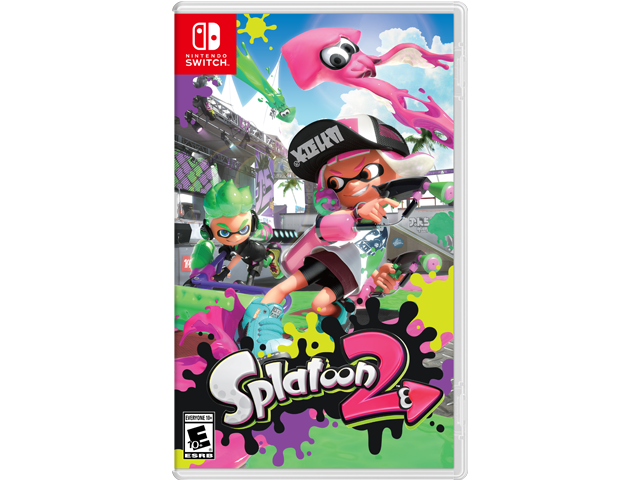

Nintendo's latest gaming system, the Switch, is currently the most innovative console on the market thanks to it's unique design. The Switch console it's self is the size and shape of a tablet, and the controllers either connect to the sides of it or connect wirelessly. Thanks to the Switch's combination of playing games both on the TV and on the go, it has become a very popular consoles for developers to make games for all ages for. Most games for the console made by Nintendo themselves are completely family friendly, and many third-party games are as well, however, there's a number of adult oriented games for the Nintendo Switch to be aware of.
|  | Super Mario Odyssey is Mario's latest 3D platforming adventure. This game introduces the new mechanic of Mario throwing his new hat, "Cappy," onto enemies and capturing them as playable characters. This is done in place of the traditional power-ups the series is known for. This is the first core Mario title to be rated E10+ For Everybody 10 and Older. The rating is thanks to a small tank enemy in the game called "Sherm." When capturing a Sherm you can shoot cannonballs out of it and the game begins to resemble that of a third person shooter. No people are fired at, only enemies. Age recommendation: 7+ |
|---|---|
|  | The Switch's killer launch title, as well as the Wii U's swan song; The Legend of Zelda: Breath of the Wild was hyped to be the biggest adventure in the series yet, and lives up to that promise according to fans and critics alike. Breath of the Wild earns itself an E10+ rating thanks to it's combat. You can defeat enemies with various blunt and sharp weapons, different types of arrows (including ones that electrocute and explode), and bombs that emit "energy" rather than fire, although there are regular explosives scattered throughout the game. There is no blood or dismemberment, with the exception of the skeleton enemies that fall apart. Most enemies are monsters, but there is the occasional "Yiga Clan" member that is human, but completely covered in both outfit and mask. Age Recommendation: 10+ |
|  | Yes, Splatoon 2 is classified as a third person shooter, but don't be so quick to judge. Notice that E10+ rating? This isn't your average shooter. The weapons in Splatoon 2 are made to both splatter and shoot, meaning they resemble colorful waterguns and painting equipment, no real guns, and definetly no bullets. Just ink. Shooting other players and enemies is a part of Splatoon 2, but nobody dies, they just burst if they get inked with the wrong color too much and respawn as good as new. There are bombs as well, but they don't burst with explosives, they burst with more ink. Players can compose their own drawings and messages that will show up for other players to view. Inappropriate post can be reported and will get taken down if necessary. Age Recommendation: 7+ |
Not seeing the game you need to know about? Tell Us!